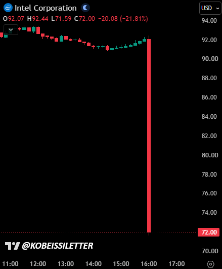

https://x.com/KobeissiLetter/status/2115898507878129840?a=FXtKoOW8334MmYRosDc&s=20

인텔, 4분기 실적 전망 부진에 주가 20% 급락… 3분기 실적 호조 빛바래
인텔(NASDAQ: INTC) 주가가 목요일 20% 급락했다. 반도체 제조업체인 인텔이 월가의 예상치를 크게 밑도는 4분기 실적 및 매출 전망을 내놓으면서, 예상보다 양호한 3분기 순이익과 데이터센터 프로세서 수요 급증이라는 호재가 빛을 바랬다.
인텔은 3분기 조정 주당순이익(EPS)이 0.52달러를 기록했다고 발표했다. 애널리스트들의 예상치인 0.40달러를 웃도는 수치다. 매출은 전년 동기 대비 21% 증가한 165억 달러로, 시장 컨센서스인 164억 8,000만 달러를 소폭 상회했다.
그러나 향후 실적 전망은 상당히 부진했다. 인텔은 4분기 매출을 150억~160억 달러로 전망했으며, 이는 애널리스트들의 예상치인 170억 8,000만 달러를 밑도는 수준이다. 전망치의 중간값을 기준으로 하면 시장 예상보다 약 9% 낮다. 조정 주당순이익은 0.25달러로 예상돼, 시장 컨센서스인 0.44달러에 크게 못 미쳤다.
이번 전망은 인텔의 사업 부문별로 상반된 흐름이 나타나는 가운데 나왔다. 서버용 CPU의 강력한 수요가 PC 시장의 부진을 상쇄하는 데 도움을 주고 있다.
립부 탄 인텔 최고경영자(CEO)는 “PC 업계 전반의 단기적인 역풍에도 불구하고 CPU 수요는 여전히 견조하다”고 말했다. 그는 이번 실적이 실행력 개선, 공급 확대, 공정 기술 개발 진전을 반영한다고 덧붙였다.
데이비드 진스너 최고재무책임자(CFO)는 PC 시장의 부진이 적어도 내년 상반기까지 이어질 것으로 예상한다고 밝혔다.
인텔의 클라이언트 컴퓨팅 및 피지컬 AI 그룹 매출은 업계 침체의 영향으로 3분기에 전년 동기 대비 5% 감소한 81억 달러를 기록했다. 반면 데이터센터 및 AI 부문 매출은 78% 급증한 73억 달러를 기록했다. 진스너에 따르면 이는 최근 15년간 가장 높은 데이터센터 매출 증가율이다.
수익성 전망 역시 투자자들의 기대에 미치지 못했다. 조정 매출총이익률은 3분기에 44.1%를 기록해 전년 동기의 40%에서 상승했지만, 인텔은 4분기에 이 수치가 38%로 하락할 것으로 예상했다.
인텔 파운드리 매출은 전년 동기 대비 58% 증가한 67억 달러를 기록했다. 회사는 해당 분기에 51억 달러의 영업현금흐름을 창출했다. 다만 투자자들은 인텔의 제조 사업이 장기 투자 계획을 뒷받침할 만큼 충분한 외부 고객을 확보할 수 있을지 계속 주시하고 있다.
경영진이 실적 발표 콘퍼런스콜에서 파운드리 고객사 확보 현황, 생산능력, 차세대 공정 기술 로드맵에 관한 추가 정보를 공개한다면 인텔의 경영 정상화 가능성을 가늠할 단서를 얻을 수 있을 것으로 보인다.
순이익과 매출은 증가했는데 실적 전망이 낮게 잡힌 것이 이유
PC 시장의 부진도 주가 하락을 이끌었다고 합니다


PC를 살 수 있는 시장을 만들든가!!!!